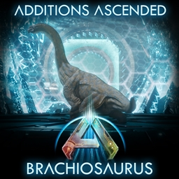
Additions Ascended: Brachiosaurus
Creatures
A towering long-neck herbivore.
A heavy gatherer and mobile base platform once tamed.
Legion of Idiots, Astraeos
Quick reference for all mods installed on the Legion of Idiots server.

A towering long-neck herbivore.
A heavy gatherer and mobile base platform once tamed.
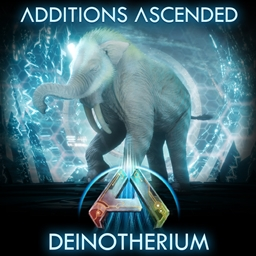
A prehistoric elephant-like herbivore.
Strong melee and harvesting power; useful for clearing trees and brush.
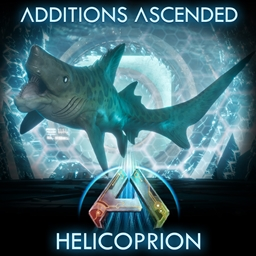
A saw-toothed prehistoric shark.
W-I-P
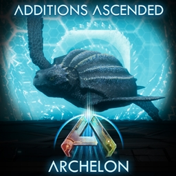
A giant prehistoric sea turtle.
Durable water travel and diving support.
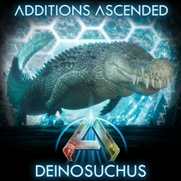
A massive prehistoric crocodile.
W-I-P
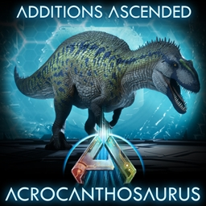
Alarge apex carnivore.
High-tier land combat mount.
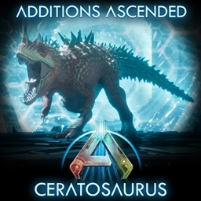
A horned mid-size carnivore.
W-I-P
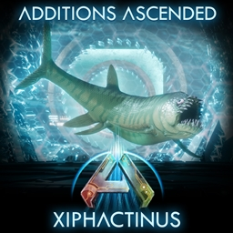
A large aggressive prehistoric fish.
W-I-P
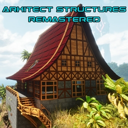
Full replacement for the vanilla building sets.
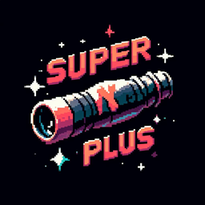
An upgraded spyglass that passively shows detailed configurable creature and structure info.
Read wild creature stats, levels, gender, torpor, ownership and taming info from a distance.
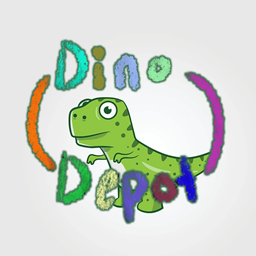
Full replacement for the vanilla Cryo Pod system.
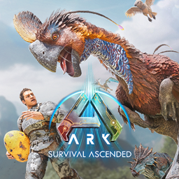
A large feathered oviraptorid.
Adds additional survivor notes which can be collected.
Provides XP bonuses and collectible cosmetics.
Adds a large selection of new character hairstyles and head pieces.
Apply new styles at a mirror or character customization station.
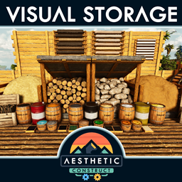
Storage containers that dynamically change their appearance based on their fill level.
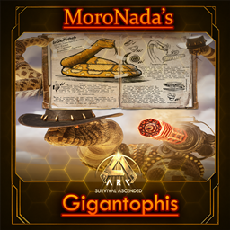
A giant prehistoric snake.... with a gun.
W-I-P
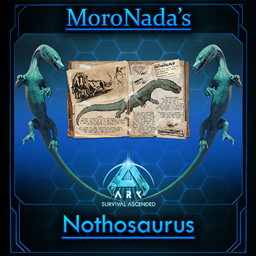
An agile marine reptile.
W-I-P
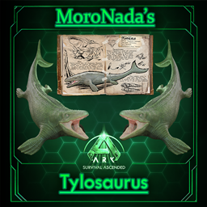
A large predatory marine reptile.
W-I-P
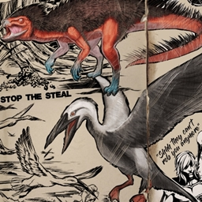
Prevents the Icthy and Truodon from stealing items from players.
W-I-P
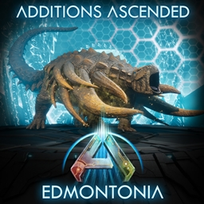
An armored ankylosaur-like herbivore.
W-I-P
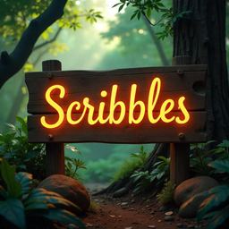
Adds improved, customizable signs and labeling/painting tools.
Useful for clear storage labels, directions, and base signage.
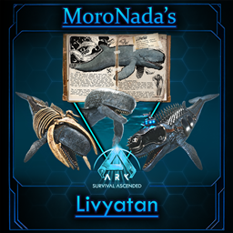
A giant predatory prehistoric whale.
W-I-P
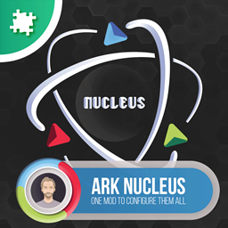
A server administration and management toolkit.
Accessed via a UI button in the top right of the Inventory screen.
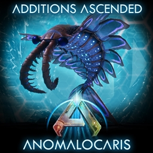
A prehistoric aquatic arthropod.
W-I-P
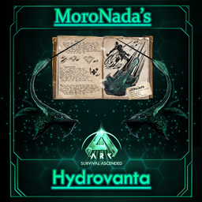
A custom aquatic creature.
W-I-P
A creature collection and morphing system allowing players to store creature DNA and transform into them.

Allows holding the attack button to automatically keep attacking while riding creatures.
Reduces hand strain during long farming or combat sessions.

Saves a backup of inventories so items can be restored after loss.
Backups occur every 5 minutes.
Provides Supply Drop style light beams on player corpses when they die for easy location and recovery.
Can be fully configured via a button in the Escape menu.
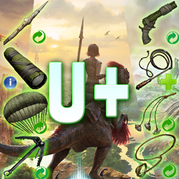
Adds a collection of re-usable tools and items.
Torch, Spear, Bola, Whip, Parachute, Glider, Grappling Hook, etc...

A complete overhaul of many existing structures and the addition of new structures to facilitate automation and QOL.
W-I-P
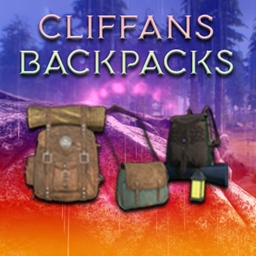
Adds wearable backpacks that provide extra carry capacity and optional lighting.
There are three Tiers of backpack and backpack rarity impacts weight reduction.
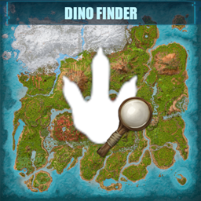
Configurable Minimap "radar" for locating wild creatures.
Can be accessed via a button on the minimap/map.
Streamlines the breeding process.
Only allows the highest stats and "best" traits to be passed down when breeding.
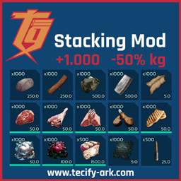
Increases item stack sizes up to 1000.
W-I-P
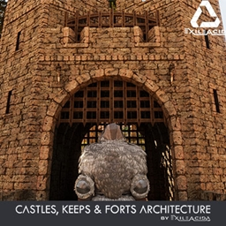
Medieval castle, keep, and fort building pieces for stone-age and RP builds.
W-I-P
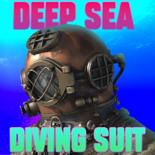
Diving gear that bridges the gap between land and sea exploration prior to the Scuba Armor.
Makes deep-sea exploration and underwater farming far more practical.
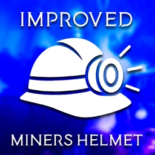
An improved miner's helmet with a better light.
Brighter hands-free lighting for caves and night work.
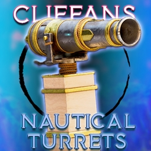
Cannons and mountable swivle turrets for ships.
Useful for defending ocean platforms and rafts.
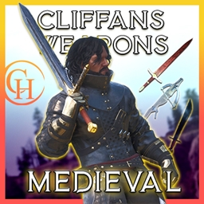
Medieval-themed melee and ranged weapons.
W-I-P
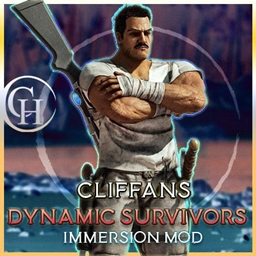
Adds immersion-focused survivor animations and behaviors.
Survivors will dynamically react to weather, conditions, time of day, and other circumstances with unique behaviors and animations.
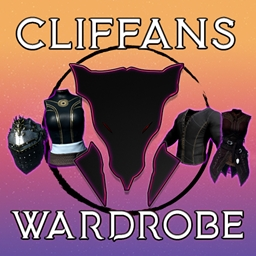
Adds wardrobe outfits and clothing options for character customization.
W-I-P
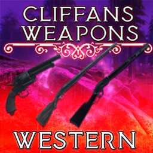
Western-themed firearms.
Adds landscaping pieces such as paths, plants, and terrain decor for base surroundings.
Useful for shaping yards, gardens, and immersive base exteriors.
Adds garden-themed decorative items like planters, furniture, and ornaments.
W-I-P
Adds extra roleplay emotes and animations for characters.
Adds expressiveness for roleplay.
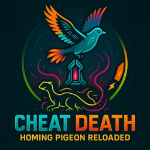
Allows tames to escape death..
A craftable item that as long as it is in the creatures inventory it will teleport to the assigned "Cheat Death" flag instead of dying or if it's owner dies while it is alive.
Improved Trains.
Faster, easier to access and control Trains.
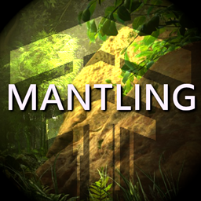
Lets your character climb and pull up onto ledges instead of getting stuck on them.
Smoother traversal over rocks, walls, and uneven terrain.
Improves the survivor's directional control when jumping.
More responsive movement and easier parkour around obstacles.
Prevents unfair deaths and loss due to crashes.
Upon disconnecting abruptly, players will be rendered invulnerable until they reconnect.
A set of admin and management tools.
Tools for use by Admins for managing the server and its players.
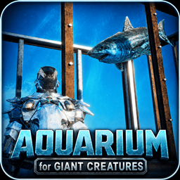
Aquariums and fish-tank decor with genuine water volumes for displaying aquatic life in bases.
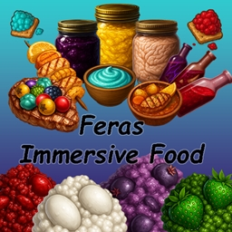
Adds a variety of immersive food and cooking content for more varied meals.
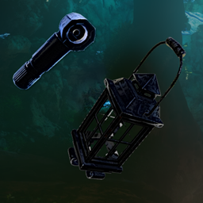
Handheld Lantern and Flashlight.
Both the lantern and Flashlight can be attached to the player's belt/shoulder for hands-free light.
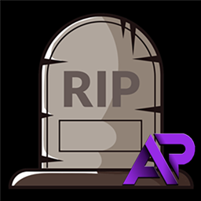
Craftable Gravestones to help you recover your items and body after death.
When a player dies with a gravestone built thier items will be stored at that gravestone and they can be retrieved.
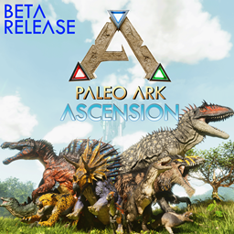
A creature expansion from the Paleo ARK series adding new prehistoric creatures.
Part of the Paleo ARK family of creature mods.
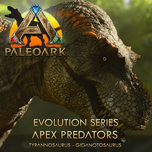
A creature expansion from the Paleo ARK series adding new prehistoric creatures.
Part of the Paleo ARK family of creature mods.
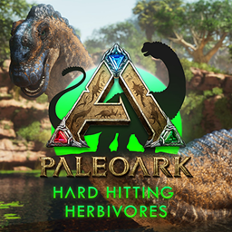
A creature expansion from the Paleo ARK series adding new prehistoric creatures.
Part of the Paleo ARK family of creature mods.
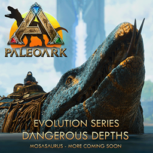
A creature expansion from the Paleo ARK series adding new prehistoric creatures.
Part of the Paleo ARK family of creature mods.
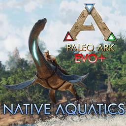
A creature expansion from the Paleo ARK series adding new prehistoric creatures.
Part of the Paleo ARK family of creature mods.
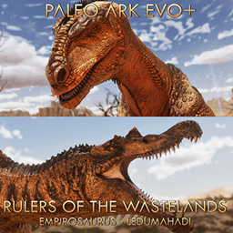
A creature expansion from the Paleo ARK series adding new prehistoric creatures.
Part of the Paleo ARK family of creature mods.
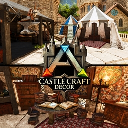
Castle and medieval-themed decorative pieces for themed builds.
Useful for creating themed builds and decorations.
Reveals the in-game map to survivor's on spawn.
Removes the need to manually explore every tile to fill the map.
A Tek themed warmap with additional functionality
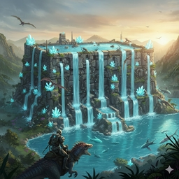
Adds placeable waterfall structures for decorative water features.
Useful for creating scenic water features in your builds.
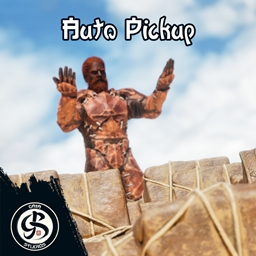
Hot key to AOE-loot any dropped items in a radius around the player.
Hotkey is G or N by default.
Adds easly craftable camping gear such as tents and campfire setups for travel and temporary rest points.
Useful for long expeditions away from your main base.
Improves the motorboat with better handling, capacity, and building surface area.
Makes water travel and sea bases more practical.
Shows item durability clearly so you know when gear is about to break.
Helps you repair or swap tools before they fail mid-task.
Hit-Marker feedback for hitting "Weak" or "Armored" points on a creature or structure.
Better visual confirmation in combat and while harvesting.
Adds location-based damage to all creatures so hits to weak spots like the head deal more damage.
Rewards accurate aim against creatures.
Displays the current in-game day count on the HUD.
Day count, Map, and Current Biome display briefly on every day change.
Lets your character sprint while swimming for faster water movement.
Reduces slow, tedious swimming over long distances.
Broadcasts player death notifications across the server.
Adds awareness of deaths and events happening server-wide.
Juke Box style music player so you can play tracks in-game.
Useful for base ambiance and parties.
Medieval and fantasy themed music tracks for the Ryhtmbox.
Sets the mood for RP and medieval-themed builds.
Catamaran style boat that is faster, turns more easily and has a larger building surface area compared to the Raft.
More options for transport, fishing, and ocean building.
Mythological creatures themed around the Astraeos map.
Minotaur, Medusa, Skeletons, and other mythological creatures.
Trireme ships themed around the Astraeos map with massive building surface area.
Large ancient-style ships for ocean transport and sea bases.